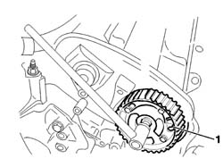
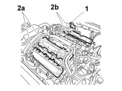
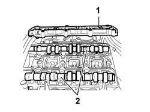
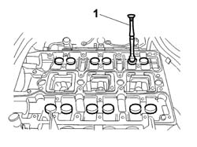
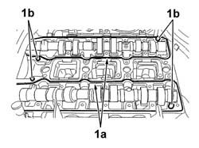
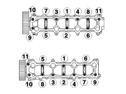
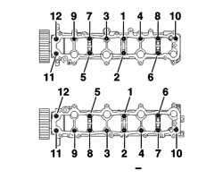
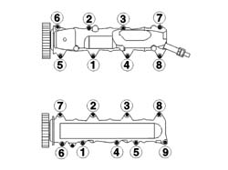
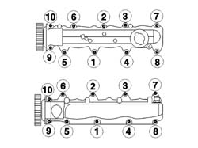
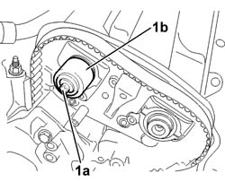

1036D10 CAMSHAFT IN CYLINDER HEAD - R R ON VEHICLE
- Path
- Procedures > 10 ENGINE > 1036 TIMING SYSTEM > 1036D CAMSHAFT (1) IN CYLINDER HEADS (2) > 1036D10 CAMSHAFT IN CYLINDER HEAD - R R ON VEHICLE
- Kind
- repair procedure (removal / refitting; the operation number is the code)
- Applies to
- engines: 3.0 24V V6; all production periods
- Interactive page
- https://sloeber94.github.io/elrnDB-fUlss/en/#/179000207
Applies to: engines: 3.0 24V V6; all production periods
 Removing
Removing
 Refitting
RefittingPosition the vehicle on the lift.
Disconnect the negative battery terminal.
Description | Connector | |
|---|---|---|
. | Battery |
See
Op. 1016A10 SOUND-PROOFING COVER - R.R
Op. 1032B14 TOOTHED TIMING BELT - R + R FOR TIMING ADJUSTMENT OR REPLACEMENT VERSIONS WITH AIR CONDITIONER
See
Op. 1036C39 PHASE TRANSFORMER ON INLET CAMSHAFT IN CYLINDER HEAD - R.R.
Fit the retaining tools in the special housings in the camshaft pullies.
Description | Code | Function | |
|---|---|---|---|
. | Pins | Crankshaft and timing pullies mounting. |
1. Loosen the bolts fixing the camshaft pullies.
Remove the camshaft pullies.

Applies to: engines: 3.0 24V V6; all production periods
Undo the bolts fixing the timing casings on the cylinder heads, then remove them.
1. Remove the supports.
Gradually loosen the bolts fixing the head covers starting from the outside.
2. Remove the head covers for the front head (2a) and the head covers for the rear head (2b).

Applies to: engines: 3.0 24V V6; all production periods
1. Undo the bolts fixing the tappet covers gradually, starting from the outside, then remove the tappet covers.
2. Remove the camshafts from the supports on the cylinder head.

Applies to: engines: 3.0 24V V6; all production periods
Mark the tappet housings before removing them.
1. Remove the tappets from the cylinder head.

Applies to: engines: 3.0 24V V6; all production periods
Refitting
RemovingLubricate the tappet casings using the specific product.
Description | Q.ty | Component | Type | Classification | |
|---|---|---|---|---|---|
. | MOLYDAL GB SP 370G | TAPPET CASES CYL. HEADS | - |
Fit the tappets in the special housings in the cylinder head.
Lubricate the cam housings and the supports for the shafts on the cylinder head using the specific product.
Description | Q.ty | Component | Type | Classification | |
|---|---|---|---|---|---|
. | MOLYDAL GB SP 370G | TAPPET CASES CYL. HEADS | - |
Fit the camshafts.
1. Apply sealant to the surfaces of the gaskets (1a) and check that the pins (1b) are fitted.
Description | Q.ty | Component | Type | Classification | |
|---|---|---|---|---|---|
. | CATEGORY 2 SILICON | CYLINDER HEAD INLET AND EXHAUST SHAFTS | - |

Applies to: engines: 3.0 24V V6; all production periods
Fit the tappet covers.
1. Tighten the bolts fixing the tappet covers for the right head, following the procedure described below and bearing in mind that the order illustrated in the diagram applies for each tightening stage.
Pre-tighten the tappet cover fixing bolts to the value given in the table.
Value daNm | Fastening | Component | dia | |
|---|---|---|---|---|
. | 0.2 | Bolt | TAPPET COVERS |
Tigthen the bolts fixing the tappet covers for the right head to the recommended torque.
Value daNm | Fastening | Component | dia | |
|---|---|---|---|---|
. | 0.8 | Bolt | TAPPET COVERS |

Applies to: engines: 3.0 24V V6; all production periods
1. Tighten the bolts fixing the tappet covers for the left head, following the procedure described below and bearing in mind that the order illustrated in the diagram applies for each tightening stage.
Pre-tighten the tappet cover fixing bolts to the value given in the table.
Value daNm | Fastening | Component | dia | |
|---|---|---|---|---|
. | 0.2 | Bolt | TAPPET COVERS |
Tighten the bolts fixing the tappet covers for the left head to the recommended torque.
Value daNm | Fastening | Component | dia | |
|---|---|---|---|---|
. | 0.8 | Bolt | TAPPET COVERS |

Applies to: engines: 3.0 24V V6; all production periods
Position the right head covers.
1. Tighten the right cylinder head head cover fixing bolts, following the procedure described below bearing in mind that the tightening order illustrated in the diagram should be followed for each stage.
Pre-tighten the tappet cover fixing bolts to the value given in the table.
Value daNm | Fastening | Component | dia | |
|---|---|---|---|---|
. | 0.5 | Bolt | TAPPET COVERS |
Tighten the right head cover fixing bolts to the recommended torque.
Value daNm | Fastening | Component | dia | |
|---|---|---|---|---|
. | 0.8 | Bolt | TAPPET COVERS |

Applies to: engines: 3.0 24V V6; all production periods
Position the head covers on the left head.
1. Tighten the left cylinder head head cover fixing bolts, following the procedure described below bearing in mind that the tightening order illustrated in the diagram should be followed for each stage.
Pre-tighten the tappet cover fixing bolts to the value given in the table.
Value daNm | Fastening | Component | dia | |
|---|---|---|---|---|
. | 0.5 | Bolt | TAPPET COVERS |
Tighten the left head cover fixing bolts to the recommended torque.
Value daNm | Fastening | Component | dia | |
|---|---|---|---|---|
. | 0.8 | Bolt | TAPPET COVERS |

Applies to: engines: 3.0 24V V6; all production periods
1. Fit the camshaft oil seal (1a) using the tool (1b).
Description | Code | Function | |
|---|---|---|---|
1b | Fitting tool | front seal of l/h overhead camshaft - r + r |
Repeat the operation for the remaining camshafts.

Applies to: engines: 3.0 24V V6; all production periods
1. Position the camshaft pullies in the correct position. Inlet pulley outside (1a); exhaust pulley inside (1b).
Tighten the bolt fixing the camshaft pullies to the recommended torque, immobilizing the camshafts using the special angular tightening tool.
Value daNm | Fastening | Component | dia | |
|---|---|---|---|---|
. | (exhaust side) 2 + 57° | Bolt | TIMING DRIVEN PULLIES |
Description | Code | Function | |
|---|---|---|---|
. | Torque wrench | Angular tightening |
See
Op. 1036C39 PHASE TRANSFORMER ON INLET CAMSHAFT IN CYLINDER HEAD - R.R.
Op. 1032B14 TOOTHED TIMING BELT - R + R FOR TIMING ADJUSTMENT OR REPLACEMENT VERSIONS WITH AIR CONDITIONER
See
Op. 1016A10 SOUND-PROOFING COVER - R.R
Connect the negative battery terminal.
Description | Connector | |
|---|---|---|
. | Battery |
Remove the vehicle from the lift.